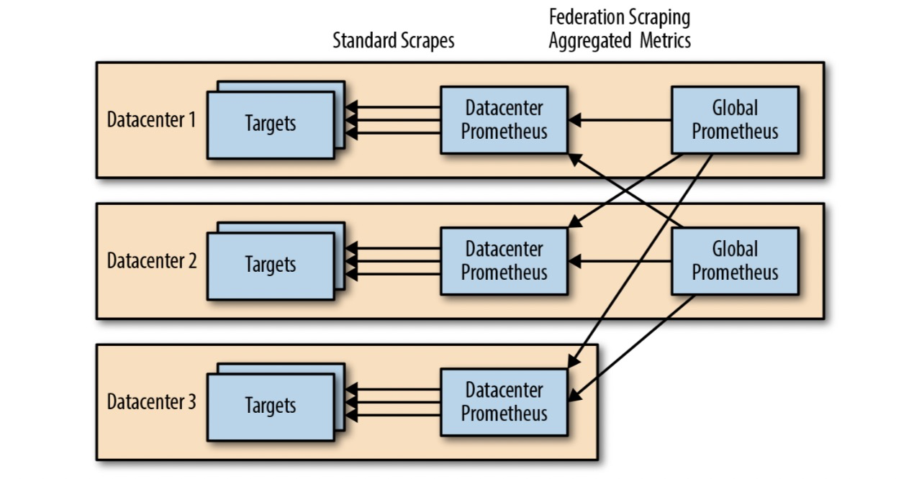

好的资料 国内Prometheus交流
国外Prometheus交流
部署单实例节点 安装脚本 #!/bin/bash path='/usr/local/cloudcare' basepath=$(cd `dirname $0 `; pwd ) echo -n "Please enter your project name：" read projectcheck_app () { prom=`ps -ef|grep prometheus|grep life|wc -l` if [ $prom == 1 ];then echo "################################" echo "Prometheus is already exists" echo "################################" exit 1 fi } install_app () { mkdir -p /usr/local /cloudcare echo "################################" echo "Waiting for installation prometheus" wget -q http://zy-prometheus.oss-cn-hangzhou.aliyuncs.com/Source%20Code/prometheus.tar.gz tar -zxf prometheus.tar.gz -C /usr/local /cloudcare rm -f $basepath /prometheus.tar.gz mkdir -p /usr/local /cloudcare/prometheus/{bin,log ,json,exporter,rules} cat > $path /prometheus/bin/start_prom.sh <<EOF #!/bin/bash cd $path /prometheus/nohup $path /prometheus/prometheus --web.enable-lifecycle --config.file=$path /prometheus/prometheus.yml 1>>$path /prometheus/log /start_prom.log 2>&1 & EOF chmod 755 $path /prometheus/bin/start_prom.sh } config_app() { sed -i '/scrape_interval:/c\\ scrape_interval: 60s' $path /prometheus/prometheus.yml sed -i '/evaluation_interval:/c\\ evaluation_interval: 60s' $path /prometheus/prometheus.yml sed -i ':a;N;$!ba;s/ - targets:/ - targets: ["127.0.0.1:9093"]/' $path /prometheus/prometheus.yml sed -i "/rule_files/a\\ - '$path /prometheus/rules/*.yml'" $path /prometheus/prometheus.yml sed -i "/evaluation_interval:/a\\ external_labels:" $path /prometheus/prometheus.yml sed -i "/external_labels/a\\ project: '$project '" $path /prometheus/prometheus.yml sed -i "/scrape_configs:/a\\ - job_name: 'autojson' \n file_sd_configs: \n - files: \n - '$path /prometheus/json/*.json'" $path /prometheus/prometheus.yml python $path /prometheus/bin/exc2conf.py } auto_check () { auto_prom=`cat /etc/rc.local |grep start_prom|wc -l` if [ $auto_prom == 0 ];then echo "$path /prometheus/bin/start_prom.sh" >>/etc/rc.local fi if [ $auto_alert == 0 ];then echo "$path /alertmanager/bin/start_alert.sh" >>/etc/rc.local fi if [ $auto_grafana == 0 ];then echo "$path /grafana/bin/start_grafana.sh" >>/etc/rc.local fi } start_app () { cd $path /prometheus sh $path /prometheus/bin/start_prom.sh echo "################################" echo "Prometheus is running" echo "################################" rm -f $basepath /$0 } check_app install_app config_app auto_check start_app
优化方案1 优化方案1 Prometheus优化方案1—systemctl和logrotate管理服务和日志
如果是 RedHat or Centos 7 版本可以通过一下脚本进行优化
#!/bin/bash cat > /usr/lib/systemd/system/prometheus.service << ENDF [Unit] Description=Prometheus Documentation=https://prometheus.io/docs/introduction/overview/ Wants=network-online.target After=network-online.target [Service] User=root Group=root Type=simple ExecStart=/usr/local /cloudcare/prometheus/bin/prometheus.sh [Install] WantedBy=multi-user.target ENDF cat > /usr/local /cloudcare/prometheus/bin/prometheus.sh << ENDF #!/bin/sh cd /usr/local /cloudcare/prometheus//usr/local /cloudcare/prometheus/prometheus --web.enable-lifecycle --config.file=/usr/local /cloudcare/prometheus/prometheus.yml 1>>/usr/local /cloudcare/prometheus/log /start_prom.log 2>&1 ENDF chmod 755 /usr/local /cloudcare/prometheus/bin/prometheus.sh systemctl daemon-reload systemctl enable prometheus.service kill -9 `ps -ef|grep [p]rometheus | awk '{print $2}' `systemctl start prometheus systemctl status prometheus yum install -y logrotate rpm -ql logrotate cat >> /etc/logrotate.conf << ENDF /usr/local /cloudcare/prometheus/log /start_prom.log { daily rotate 7 dateext create } ENDF logrotate -vf /etc/logrotate.conf ll /usr/local /cloudcare/prometheus/log /
清除优化脚本
#!/bin/bash systemctl disable prometheus.service systemctl stop prometheus mv /usr/lib/systemd/system/prometheus.service /usr/local /cloudcare/prometheus/bin/prometheus.service.back systemctl daemon-reload sed -i '/# prometheus start/,/# prometheus end/d' /etc/logrotate.conf
优化方案2 优化方案2 Prometheus优化方案2—通过supervisor管理服务和日志
前提：安装Python3的环境
pip3 install supervisor echo_supervisord_conf > /etc/supervisord/supervisord.conf cat > /etc/supervisord.conf << ENDF [unix_http_server] file=/tmp/supervisor.sock ; the path to the socket file [supervisord] logfile=/tmp/supervisord.log ; main log file; default $CWD /supervisord.log logfile_maxbytes=50MB ; max main logfile bytes b4 rotation; default 50MB logfile_backups=10 ; loglevel=info ; log level; default info; others: debug,warn,trace pidfile=/tmp/supervisord.pid ; supervisord pidfile; default supervisord.pid nodaemon=false ; start in foreground if true ; default false silent=false ; no logs to stdout if true ; default false minfds=1024 ; min. avail startup file descriptors; default 1024 minprocs=200 ; min. avail process descriptors;default 200 [rpcinterface:supervisor] supervisor.rpcinterface_factory = supervisor.rpcinterface:make_main_rpcinterface [supervisorctl] serverurl=unix:///tmp/supervisor.sock ; use a unix:// URL for a unix socket [program:prometheus] command =/usr/local /cloudcare/prometheus/prometheus --web.enable-lifecycle --config.file=/usr/local /cloudcare/prometheus/prometheus.yml ; the program (relative uses PATH, can take args)directory=/usr/local /cloudcare/prometheus/ ; directory to cwd to before exec (def no cwd) autostart=true ; start at supervisord start (default: true ) stdout_logfile=/usr/local /cloudcare/prometheus/log /supervisor_prometheus.log ; stdout log path, NONE for none; default AUTO stdout_logfile_maxbytes=1MB ; max stdout_logfile_backups=7 ; stderr_logfile=/usr/local /cloudcare/prometheus/log /supervisor_prometheus.err ; stderr log path, NONE for none; default AUTO stderr_logfile_maxbytes=1MB ; max stderr_logfile_backups=7 ; ENDF supervisord -c /etc/supervisord/supervisord.conf
告警通知 结合优化方案2的supervisor 和 Bash脚本推送故障事件 来实现 Supervisor在Prometheus进程异常结束后的未能重启 时通知运维。
关于脚本中使用的 阿里云云监控自定义事件和告警 的功能，参考文章：《阿里云云监控实现进程监控告警》
#!/bin/bash log_file=/usr/local /cloudcare/prometheus/log /supervisor_prometheus.err accessid=xxx accesssecret=xxx region=cn-shanghai GroupId=8040924 info_prometheus=info_prometheus warn_prometheus=warn_prometheus critical_prometheus=critical_prometheus if [[ -f /tmp/.check_prometheus_try_start ]]; then exit ; fi check_prometheus a=`curl 127.0.0.1:9090 2> /dev/null` echo $a | grep Foundif [[ $? == 0 ]]then check_result=1 else check_result=0 fi } restart_prometheus ts=`grep "Starting TSDB" $log_file | tail -n 1 | awk '{print $2}' | awk -F '=' '{print $2}' ` T2=`date -d "${ts} " +%s` T2_string=`date -d @${T2} "+%Y-%m-%d %H:%M:%S" ` if [[ $T1 -le $T2 ]]; then push_events $info_prometheus "正在尝试重新启动 Prometheus, 最近一次启动的时间为${T2_string} " else push_events $critical_prometheus "Supervisor没有重启 Prometheus，最近一次启动的时间为$T2_string " exit fi T=(30 60 180) for time_sec in ${T[*]} do sleep ${time_sec} check_prometheus if [[ ${check_result} == 1 ]] then push_events $info_prometheus "Prometheus 恢复访问" exit else push_events $warn_prometheus "Prometheus 不能访问" continue fi done } push_events EventName=$1 Content=$2 /usr/local /bin/aliyun --region ${region} --access-key-id ${accessid} --access-key-secret ${accesssecret} cms PutCustomEvent \ --EventInfo.1.EventName ${1} --EventInfo.1.Content "${2} " --EventInfo.1.Time `date "+%Y%m%dT%H%M%S.000+0800" ` --EventInfo.1.GroupId ${GroupId} } check_prometheus if [[ ${check_result} == 1 ]]then exit else T1=`date '+%s' ` push_events $info_prometheus "Prometheus 不能访问" for i in `seq 1 2` do restart_prometheus done check_prometheus if [[ ${check_result} == 1 ]] then push_events $info_prometheus "Prometheus 恢复访问" exit else push_events $critical_prometheus "Prometheus 不能访问" fi fi rm -rf /tmp/.check_prometheus_try_start
扯点别的 在这种情况下，我想谈谈可靠的警报。
如果一个Prometheus 进程因故死亡，你应该让它自动重启，除了状态重置之外，中断应该是最小的。
通过消除单点故障（SPOF）：运行两个相同的普罗米修斯服务器，可以轻松地使警报更可靠。
只要其中一个警报正在运行，警报管理器就会自动对警报进行重复数据消除，因为它们具有相同的标签。
并通过外部标签（所有普罗米修斯服务器上是唯一的）。并且使用它们的远程写入或联合，那么来自不同普罗米修斯服务器的度量将不会冲突。
对于监控展示建议采取简单的方法，只从一个普罗米修斯服务器上进行仪表板/联合/写作，如果出现故障，就接受这个差距。在极少数的情况下，差距覆盖了你关心的一个时期，你可以随时手动查看另一个普罗米修斯的数据。

监控部署方案总结：
部署方案
高可用性
故障恢复
单节点
最低
配置自动重启脚本
多节点
高
配置自动重启脚本
容器+k8s
较高
Kubernetes群集自动调度
建议始终在不同的数据中心和仪表板中运行至少两个全局普罗米修斯服务器，可从所有全局服务器获取图形。类似于远程写入。使用仪表板的人员有责任解释来自不同来源的数据。
另外，推荐使用TICK技术栈，参见文章《TICK学习笔记 》